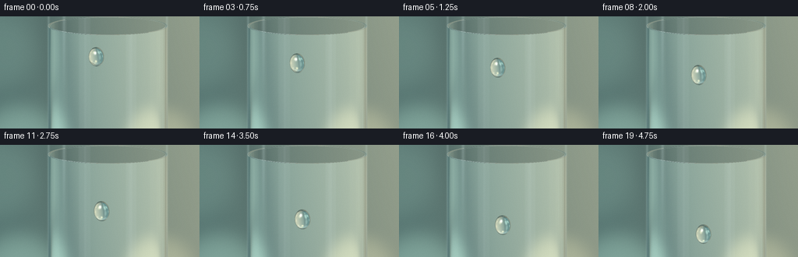
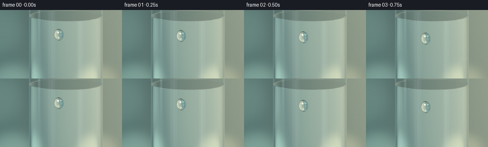
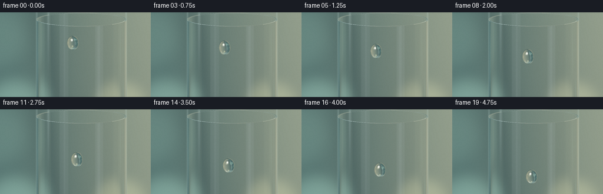
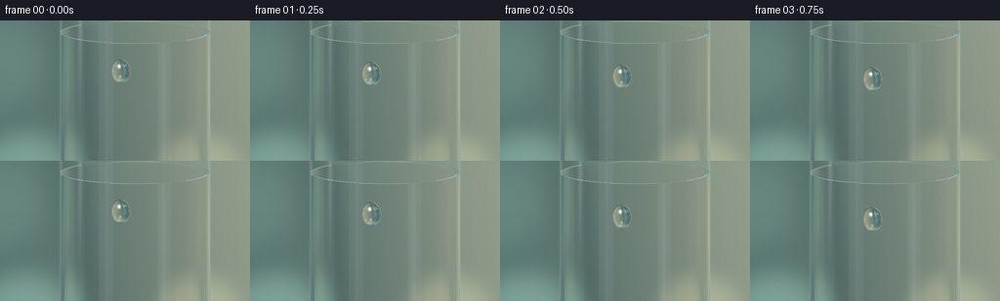

CODING AGENTS AS PIXEL WORLD MODELS
traex/GPT-6.1-Sol · phygen_037
点击播放 · 原生 RGB 像素
逐轮保存的候选
回放视频、检查图与代码变化。
每份候选均可单独播放。实际图片检查记录在下方工具轨迹中。
候选 01播放与检查图
点击播放 · 原生 RGB 像素


展开代码变化
--- 上一保存版本
+++ 本次保存版本
@@ -0,0 +1,287 @@
+"""Procedural macro photograph of a water bead descending a glass.
+Only numpy/Pillow and mathematical ray optics are used.
+"""
+from pathlib import Path
+import json
+import numpy as np
+from PIL import Image, ImageDraw, ImageFilter
+import artifact_io
+
+ROOT = Path(__file__).resolve().parent
+SPEC = json.loads((ROOT/'task_spec.json').read_text())
+W, H = SPEC['width'], SPEC['height']
+SS = 3
+w,h = W*SS,H*SS
+rng = np.random.default_rng(37)
+
+# The camera looks slightly down at a drinking glass. All geometry is in metres
+# up to an arbitrary common scale; the camera uses a macro orthographic lens.
+view = np.array([0., -.155, -1.]); view /= np.linalg.norm(view)
+up = np.array([0., -view[2], view[1]])
+right = np.array([1.,0.,0.])
+look = np.array([0.,.27,0.])
+span = 3.24
+scale = w/span
+xx,yy = np.meshgrid((np.arange(w)+.5-w/2)/scale,
+ (h/2-np.arange(h)-.5)/scale)
+O = look + xx[...,None]*right + yy[...,None]*up - view*5.
+D = np.broadcast_to(view,O.shape).copy()
+R,RI,CX = .975,.934,.13
+TOP, BOT = 1.035,-1.25
+
+
+def unit(a):
+ return a/np.maximum(np.linalg.norm(a,axis=-1,keepdims=True),1.e-12)
+
+def smooth(a,b,x):
+ t = np.clip((x-a)/(b-a),0.,1.)
+ return t*t*(3.-2.*t)
+
+# A softly out-of-focus garden and studio window, evaluated analytically.
+bokeh = []
+for i in range(16):
+ bx = rng.uniform(-4.8,4.8)
+ by = rng.uniform(-3.0,3.3)
+ radius = rng.uniform(.22,.63)
+ color = np.array([.45,.43,.23]) if bx>0 else np.array([.21,.36,.29])
+ bokeh.append((bx,by,radius,color*rng.uniform(.15,.7)))
+
+def environment(orig,direc):
+ shape = direc.shape[:-1]
+ f = np.clip((-5.-orig[...,2])/np.where(abs(direc[...,2])>1.e-5,direc[...,2],1.e-5),-100.,100.)
+ p = orig + f[...,None]*direc
+ x,y = p[...,0],p[...,1]
+ warm = smooth(-1.6,3.8,x)
+ base = np.array([.072,.155,.151])[None,:] if len(shape)==1 else np.array([.072,.155,.151])
+ col = np.broadcast_to(base,shape+(3,)).copy()
+ col += warm[...,None]*np.array([.25,.20,.104])
+ col += np.exp(-((x-1.5)/3.1)**2-((y-1.5)/4.)**2)[...,None]*np.array([.085,.095,.065])
+ # very broad dark leaves and warm luminous gaps, all safely defocused
+ for bx,by,rad,c in bokeh:
+ q = ((x-bx)**2+(y-by)**2)/rad**2
+ disk = np.exp(-q*q*.72)
+ col += disk[...,None]*c
+ shade = .06*np.exp(-((x+.75+.15*y)/.27)**2)
+ col -= shade[...,None]*np.array([.45,.7,.55])
+ # Reflection hemisphere: luminous rectangular softbox and smaller window.
+ refl = direc[...,2] > 0
+ sx = direc[...,0]/np.maximum(direc[...,2],.07)
+ sy = direc[...,1]/np.maximum(direc[...,2],.07)
+ studio = np.zeros_like(col)+np.array([.032,.057,.065])
+ studio += np.exp(-((sx+.95)/.59)**8-((sy-1.02)/.78)**8)[...,None]*np.array([2.9,3.05,2.92])
+ studio += np.exp(-((sx-.92)/.22)**8-((sy-.45)/1.2)**8)[...,None]*np.array([.60,.69,.72])
+ studio += np.exp(-((sx+.3)/1.4)**2-((sy+1.3)/.25)**2)[...,None]*np.array([.27,.22,.15])
+ return np.where(refl[...,None],studio,np.maximum(col,.008))
+
+
+def glass_intersect(o,d):
+ shape=o.shape[:-1]
+ best=np.full(shape,1.e7)
+ normals=np.zeros_like(o)
+ # Outward normals always point out of the actual glass material.
+ for radius, sign in ((R,1.),(RI,-1.)):
+ ox=o[...,0]-CX; oz=o[...,2]
+ a=d[...,0]**2+d[...,2]**2
+ b=ox*d[...,0]+oz*d[...,2]
+ c=ox*ox+oz*oz-radius*radius
+ disc=b*b-a*c
+ root=np.sqrt(np.maximum(disc,0))
+ for t in ((-b-root)/np.maximum(a,1e-15),(-b+root)/np.maximum(a,1e-15)):
+ y=o[...,1]+t*d[...,1]
+ valid=(disc>=0)&(t>1e-5)&(y<=TOP)&(y>=BOT)&(t<best)
+ p=o+t[...,None]*d
+ n=np.stack(((p[...,0]-CX)/radius,np.zeros(shape),p[...,2]/radius),axis=-1)*sign
+ normals=np.where(valid[...,None],n,normals)
+ best=np.where(valid,t,best)
+ # A horizontal polished annular lip and solid base.
+ for py,sgn in ((TOP,1.),(BOT,-1.)):
+ t=(py-o[...,1])/np.where(abs(d[...,1])>1e-10,d[...,1],1e-10)
+ p=o+t[...,None]*d
+ rad2=(p[...,0]-CX)**2+p[...,2]**2
+ valid=(t>1.e-5)&(t<best)&(rad2<=R*R)
+ if py==TOP: valid &= rad2>=RI*RI
+ n=np.zeros_like(o); n[...,1]=sgn
+ normals=np.where(valid[...,None],n,normals)
+ best=np.where(valid,t,best)
+ return best,normals
+
+
+def glass_trace(orig,direc,steps=7):
+ o=orig.copy(); d=direc.copy()
+ col=np.zeros_like(o); weight=np.ones(o.shape[:-1]); active=np.ones(weight.shape,dtype=bool)
+ for bounce in range(steps):
+ t,n=glass_intersect(o,d)
+ hit=(t<1e6)&active
+ miss=active&~hit
+ if np.any(miss): col[miss]+=weight[miss,None]*environment(o[miss],d[miss])
+ if not np.any(hit): break
+ active=hit
+ entering=np.sum(d*n,axis=-1)<0
+ face=np.where(entering[...,None],n,-n)
+ cos=np.clip(-np.sum(d*face,axis=-1),0,1)
+ eta=np.where(entering,1/1.505,1.505)
+ k=1-eta**2*(1-cos*cos)
+ fres=.0406+(1-.0406)*(1-cos)**5
+ fres=np.where(k<0,1.,fres)
+ p=o+np.minimum(t,1e6)[...,None]*d
+ reflected=d+2*cos[...,None]*face
+ # The dominant reflected object is a studio panel outside the glass.
+ # Approximate secondary reflected paths with this distant environment.
+ rc=environment(p[hit],reflected[hit])
+ col[hit]+=weight[hit,None]*fres[hit,None]*rc
+ weight[hit]*=(1-fres[hit])
+ weight[hit]*=np.where(entering[hit],1.,np.exp(-np.clip(t[hit],0,4)*.07))
+ trans=eta[...,None]*d+(eta*cos-np.sqrt(np.maximum(k,0)))[...,None]*face
+ d=unit(trans)
+ o=p+d*2.e-5
+ active=hit&(weight>.001)&(k>=0)
+ if np.any(active): col[active]+=weight[active,None]*environment(o[active],d[active])
+ return col
+
+
+def project(p):
+ rel=np.asarray(p)-look
+ return np.stack((w/2+rel[...,0]*scale,h/2-np.sum(rel*up,axis=-1)*scale),axis=-1)
+
+
+def add_rim(img):
+ # The rounded lip catches thin, interrupted white highlights; never a flat
+ # opaque outline. It reinforces the cylindrical shape at the top of frame.
+ overlay=Image.new('RGBA',(w,h),(0,0,0,0)); draw=ImageDraw.Draw(overlay)
+ for radius,dy in ((R-.008,.002),(RI+.003,-.003)):
+ ts=np.linspace(0,np.pi*2,241)
+ p=np.stack((CX+radius*np.cos(ts),np.full_like(ts,TOP+dy),radius*np.sin(ts)),axis=-1)
+ points=project(p)
+ for i in range(len(points)-1):
+ s=ts[i]
+ brightness=.22+.58*np.exp(-((s-2.30)/.5)**2)+.23*np.exp(-((s-.17)/.3)**2)
+ alpha=int(brightness*160)
+ draw.line([tuple(points[i]),tuple(points[i+1])],fill=(219,240,238,alpha),width=2)
+ rgba=Image.alpha_composite(img.convert('RGBA'),overlay)
+ return rgba.convert('RGB')
+
+
+print('Tracing stationary glass and background...',flush=True)
+base=glass_trace(O.reshape(-1,3),D.reshape(-1,3)).reshape(h,w,3)
+# Soft grazing-angle light makes the convex surface legible without fogging it.
+surface_x=xx-CX
+edge=np.exp(-((np.abs(surface_x)-R*.985)/.018)**2)
+base += edge[...,None]*np.array([.065,.088,.083])
+# A tall reflected strip follows the actual curve, not the moving water bead.
+strip=np.exp(-((surface_x+.71)/.025)**2)*smooth(-.6,1.0,yy)
+base += strip[...,None]*np.array([.07,.093,.092])
+# Illumination remains perfectly stable; only the water bead and its wake move.
+
+
+def center(t):
+ # Gradual descent with a tiny lateral drift along the smooth curved wall.
+ prog=.80*t+.20*t*t
+ x=-.055+.14*prog+.012*np.sin(np.pi*prog)
+ y=.68-.80*prog
+ z=np.sqrt(R*R-(x-CX)**2)
+ return np.array([x,y,z+.022])
+
+
+def water_patch(t,base_frame):
+ c=center(t)
+ prog=.80*t+.20*t*t
+ # A slightly asymmetric, elongated water bead with a round heavy lower end.
+ rx=.128*(1-.018*np.sin(t*np.pi*2))
+ ry=.158+.008*np.sin(t*np.pi)
+ rz=.105
+ # Ellipsoid orientation: conform to the front wall, long axis along descent.
+ normal=unit(np.array([c[0]-CX,0,c[2]-.022]))
+ tangent=unit(np.cross(np.array([0.,1.,0.]),normal))
+ along=np.array([0.,1.,0.])
+ # Lean of the drop is subtle; the front remains convex and volume stable.
+ theta=-.04-.035*np.sin(t*np.pi)
+ e1=tangent*np.cos(theta)-along*np.sin(theta)
+ e2=tangent*np.sin(theta)+along*np.cos(theta)
+ axes=np.stack((e1,e2,normal),axis=1)
+ radii=np.array([rx,ry,rz])
+ pc=project(c)
+ x0=max(0,int(pc[0]-rx*scale-10*SS));x1=min(w,int(pc[0]+rx*scale+10*SS))
+ y0=max(0,int(pc[1]-ry*scale-7*SS));y1=min(h,int(pc[1]+ry*scale+9*SS))
+ po=O[y0:y1,x0:x1].reshape(-1,3)
+ pd=D[y0:y1,x0:x1].reshape(-1,3)
+ q=(po-c)@axes/radii
+ v=pd@axes/radii
+ a=np.sum(v*v,axis=-1); b=np.sum(q*v,axis=-1); cc=np.sum(q*q,axis=-1)-1
+ disc=b*b-a*cc
+ hit=disc>0
+ ts=(-b-np.sqrt(np.maximum(disc,0)))/a
+ p=po[hit]+ts[hit,None]*pd[hit]
+ n=unit(((p-c)@axes/radii**2)@axes.T)
+ d=pd[hit]
+ cos=np.clip(-np.sum(d*n,axis=-1),0,1)
+ eta=1/1.333
+ k=1-eta*eta*(1-cos*cos)
+ wt=unit(eta*d+(eta*cos-np.sqrt(k))[:,None]*n)
+ # Transport through the curved drop, then through the cylindrical glass.
+ op=p+wt*1e-5
+ q2=(op-c)@axes/radii;v2=wt@axes/radii
+ a2=np.sum(v2*v2,axis=-1);b2=np.sum(q2*v2,axis=-1);c2=np.sum(q2*q2,axis=-1)-1
+ exit_t=(-b2+np.sqrt(np.maximum(b2*b2-a2*c2,0)))/a2
+ exitp=op+exit_t[:,None]*wt
+ outnormal=unit(((exitp-c)@axes/radii**2)@axes.T)
+ cos2=np.clip(np.sum(wt*outnormal,axis=-1),0,1)
+ k2=1-1.333**2*(1-cos2*cos2)
+ wd=unit(1.333*wt+(-1.333*cos2+np.sqrt(np.maximum(k2,0)))[:,None]*outnormal)
+ reflected=d+2*cos[:,None]*n
+ reflection=environment(p,reflected)
+ # Refraction magnifies and bends the scenery inside the clear bead.
+ through=glass_trace(exitp+wd*3e-5,wd)
+ fres=.0204+.9796*(1-cos)**5
+ fres=np.where(k2<0,np.maximum(fres,.7),fres)
+ result=through*(1-fres[:,None])+reflection*fres[:,None]
+ # A second smaller glint is a distant warm pin light; the main white window
+ # reflection comes directly from the ray optics above.
+ halfv=unit(unit(np.array([-.65,.95,1.5]))-view)
+ gleam=np.maximum(np.sum(n*halfv,axis=-1),0)**190
+ result+=gleam[:,None]*np.array([1.6,1.57,1.40])
+ # Deep narrow meniscus on its trailing edge and a luminous lower crescent.
+ local=(p-c)@axes
+ rcoord=np.sqrt((local[:,0]/rx)**2+(local[:,1]/ry)**2)
+ edge_band=np.exp(-((rcoord-.969)/.025)**2)
+ result*=1-.17*edge_band[:,None]
+ caustic=np.exp(-((local[:,0]-.025)/.08)**2-((local[:,1]+ry*.72)/.022)**2)
+ result+=caustic[:,None]*np.array([.14,.19,.17])
+ patch=base_frame[y0:y1,x0:x1].reshape(-1,3).copy()
+ patch[hit]=result
+ base_frame[y0:y1,x0:x1]=patch.reshape(y1-y0,x1-x0,3)
+ return base_frame
+
+
+def tone(a):
+ # Photograph-like smooth highlight roll-off with an sRGB display transfer.
+ a=np.maximum(a,0)
+ a=a/(1+.24*a)
+ a=np.clip(a,0,1)
+ a=np.where(a<=.0031308,12.92*a,1.055*a**(1/2.4)-.055)
+ return np.clip(a*255+.5,0,255).astype(np.uint8)
+
+frames=[]
+for i in range(SPEC['frames']):
+ t=i/(SPEC['frames']-1)
+ image=base.copy()
+ # Narrow, almost invisible wet line left on the glass where the bead slid.
+ # The wake never extends ahead of the water.
+ if i:
+ for s in np.linspace(0,t,100):
+ cp=project(center(s))
+ distance=(xx-(cp[0]-w/2)/scale)**2+(yy-(h/2-cp[1])/scale)**2
+ # Contributions are restricted to small pixels; an understated glint.
+ image+=np.exp(-distance/.000085)[...,None]*np.array([.00045,.0007,.00068])
+ image=water_patch(t,image)
+ im=Image.fromarray(tone(image))
+ im=add_rim(im)
+ # Very subtle sensor grain, spatially locked so that there is no flicker.
+ im=im.resize((W,H),Image.Resampling.LANCZOS)
+ arr=np.asarray(im).astype(np.float32)
+ grain=np.random.default_rng(140).normal(0,.20,(H,W,1))
+ arr=np.clip(arr+grain,0,255).astype(np.uint8)
+ frames.append(arr)
+ print(f'Frame {i+1:02d}/{SPEC["frames"]}',flush=True)
+frames=np.stack(frames)
+artifact_io.save(frames,ROOT)
+print('Saved',frames.shape,frames.dtype,flush=True)
候选 02播放与检查图
点击播放 · 原生 RGB 像素


展开代码变化
--- 上一保存版本
+++ 本次保存版本
@@ -114,7 +114,9 @@
hit=(t<1e6)&active
miss=active&~hit
if np.any(miss): col[miss]+=weight[miss,None]*environment(o[miss],d[miss])
- if not np.any(hit): break
+ if not np.any(hit):
+ active = hit
+ break
active=hit
entering=np.sum(d*n,axis=-1)<0
face=np.where(entering[...,None],n,-n)
可观测工具轨迹
实际执行的命令与返回图片。
命令 1exit 0
/bin/bash -lc "ls -la && cat prompt.txt && printf '\\n---RULES---\\n' && cat GENERATION_RULES.md && printf '\\n---SPEC---\\n' && cat task_spec.json"
命令 2exit 0
/bin/bash -lc "cat artifact_io.py && python - <<'PY'
import numpy, PIL
print('numpy/PIL available')
PY"命令 3exit 0
/bin/bash -lc "cat > generate.py <<'PY'
\"\"\"Procedural macro photograph of a water bead descending a glass.
Only numpy/Pillow and mathematical ray optics are used.
\"\"\"
from pathlib import Path
import json
import numpy as np
from PIL import Image, ImageDraw, ImageFilter
import artifact_io
ROOT = Path(__file__).resolve().parent
SPEC = json.loads((ROOT/'task_spec.json').read_text())
W, H = SPEC['width'], SPEC['height']
SS = 3
w,h = W*SS,H*SS
rng = np.random.default_rng(37)
# The camera looks slightly down at a drinking glass. All geometry is in metres
# up to an arbitrary common scale; the camera uses a macro orthographic lens.
view = np.array([0., -.155, -1.]); view /= np.linalg.norm(view)
up = np.array([0., -view[2], view[1]])
right = np.array([1.,0.,0.])
look = np.array([0.,.27,0.])
span = 3.24
scale = w/span
xx,yy = np.meshgrid((np.arange(w)+.5-w/2)/scale,
(h/2-np.arange(h)-.5)/scale)
O = look + xx[...,None]*right + yy[...,None]*up - view*5.
D = np.broadcast_to(view,O.shape).copy()
R,RI,CX = .975,.934,.13
TOP, BOT = 1.035,-1.25
def unit(a):
return a/np.maximum(np.linalg.norm(a,axis=-1,keepdims=True),1.e-12)
def smooth(a,b,x):
t = np.clip((x-a)/(b-a),0.,1.)
return t*t*(3.-2.*t)
# A softly out-of-focus garden and studio window, evaluated analytically.
bokeh = []
for i in range(16):
bx = rng.uniform(-4.8,4.8)
by = rng.uniform(-3.0,3.3)
radius = rng.uniform(.22,.63)
color = np.array([.45,.43,.23]) if bx>0 else np.array([.21,.36,.29])
bokeh.append((bx,by,radius,color*rng.uniform(.15,.7)))
def environment(orig,direc):
shape = direc.shape[:-1]
f = np.clip((-5.-orig[...,2])/np.where(abs(direc[...,2])>1.e-5,direc[...,2],1.e-5),-100.,100.)
p = orig + f[...,None]*direc
x,y = p[...,0],p[...,1]
warm = smooth(-1.6,3.8,x)
base = np.array([.072,.155,.151])[None,:] if len(shape)==1 else np.array([.072,.155,.151])
col = np.broadcast_to(base,shape+(3,)).copy()
col += warm[...,None]*np.array([.25,.20,.104])
col += np.exp(-((x-1.5)/3.1)**2-((y-1.5)/4.)**2)[...,None]*np.array([.085,.095,.065])
# very broad dark leaves and warm luminous gaps, all safely defocused
for bx,by,rad,c in bokeh:
q = ((x-bx)**2+(y-by)**2)/rad**2
disk = np.exp(-q*q*.72)
col += disk[...,None]*c
shade = .06*np.exp(-((x+.75+.15*y)/.27)**2)
col -= shade[...,None]*np.array([.45,.7,.55])
# Reflection hemisphere: luminous rectangular softbox and smaller window.
refl = direc[...,2] > 0
sx = direc[...,0]/np.maximum(direc[...,2],.07)
sy = direc[...,1]/np.maximum(direc[...,2],.07)
studio = np.zeros_like(col)+np.array([.032,.057,.065])
studio += np.exp(-((sx+.95)/.59)**8-((sy-1.02)/.78)**8)[...,None]*np.array([2.9,3.05,2.92])
studio += np.exp(-((sx-.92)/.22)**8-((sy-.45)/1.2)**8)[...,None]*np.array([.60,.69,.72])
studio += np.exp(-((sx+.3)/1.4)**2-((sy+1.3)/.25)**2)[...,None]*np.array([.27,.22,.15])
return np.where(refl[...,None],studio,np.maximum(col,.008))
def glass_intersect(o,d):
shape=o.shape[:-1]
best=np.full(shape,1.e7)
normals=np.zeros_like(o)
# Outward normals always point out of the actual glass material.
for radius, sign in ((R,1.),(RI,-1.)):
ox=o[...,0]-CX; oz=o[...,2]
a=d[...,0]**2+d[...,2]**2
b=ox*d[...,0]+oz*d[...,2]
c=ox*ox+oz*oz-radius*radius
disc=b*b-a*c
root=np.sqrt(np.maximum(disc,0))
for t in ((-b-root)/np.maximum(a,1e-15),(-b+root)/np.maximum(a,1e-15)):
y=o[...,1]+t*d[...,1]
valid=(disc>=0)&(t>1e-5)&(y<=TOP)&(y>=BOT)&(t<best)
p=o+t[...,None]*d
n=np.stack(((p[...,0]-CX)/radius,np.zeros(shape),p[...,2]/radius),axis=-1)*sign
normals=np.where(valid[...,None],n,normals)
best=np.where(valid,t,best)
# A horizontal polished annular lip and solid base.
for py,sgn in ((TOP,1.),(BOT,-1.)):
t=(py-o[...,1])/np.where(abs(d[...,1])>1e-10,d[...,1],1e-10)
p=o+t[...,None]*d
rad2=(p[...,0]-CX)**2+p[...,2]**2
valid=(t>1.e-5)&(t<best)&(rad2<=R*R)
if py==TOP: valid &= rad2>=RI*RI
n=np.zeros_like(o); n[...,1]=sgn
normals=np.where(valid[...,None],n,normals)
best=np.where(valid,t,best)
return best,normals
def glass_trace(orig,direc,steps=7):
o=orig.copy(); d=direc.copy()
col=np.zeros_like(o); weight=np.ones(o.shape[:-1]); active=np.ones(weight.shape,dtype=bool)
for bounce in range(steps):
t,n=glass_intersect(o,d)
hit=(t<1e6)&active
miss=active&~hit
if np.any(miss): col[miss]+=weight[miss,None]*environment(o[miss],d[miss])
if not np.any(hit): break
active=hit
entering=np.sum(d*n,axis=-1)<0
face=np.where(entering[...,None],n,-n)
cos=np.clip(-np.sum(d*face,axis=-1),0,1)
eta=np.where(entering,1/1.505,1.505)
k=1-eta**2*(1-cos*cos)
fres=.0406+(1-.0406)*(1-cos)**5
fres=np.where(k<0,1.,fres)
p=o+np.minimum(t,1e6)[...,None]*d
reflected=d+2*cos[...,None]*face
# The dominant reflected object is a studio panel outside the glass.
# Approximate secondary reflected paths with this distant environment.
rc=environment(p[hit],reflected[hit])
col[hit]+=weight[hit,None]*fres[hit,None]*rc
weight[hit]*=(1-fres[hit])
weight[hit]*=np.where(entering[hit],1.,np.exp(-np.clip(t[hit],0,4)*.07))
trans=eta[...,None]*d+(eta*cos-np.sqrt(np.maximum(k,0)))[...,None]*face
d=unit(trans)
o=p+d*2.e-5
active=hit&(weight>.001)&(k>=0)
if np.any(active): col[active]+=weight[active,None]*environment(o[active],d[active])
return col
def project(p):
rel=np.asarray(p)-look
return np.stack((w/2+rel[...,0]*scale,h/2-np.sum(rel*up,axis=-1)*scale),axis=-1)
def add_rim(img):
# The rounded lip catches thin, interrupted white highlights; never a flat
# opaque outline. It reinforces the cylindrical shape at the top of frame.
overlay=Image.new('RGBA',(w,h),(0,0,0,0)); draw=ImageDraw.Draw(overlay)
for radius,dy in ((R-.008,.002),(RI+.003,-.003)):
ts=np.linspace(0,np.pi*2,241)
p=np.stack((CX+radius*np.cos(ts),np.full_like(ts,TOP+dy),radius*np.sin(ts)),axis=-1)
points=project(p)
for i in range(len(points)-1):
s=ts[i]
brightness=.22+.58*np.exp(-((s-2.30)/.5)**2)+.23*np.exp(-((s-.17)/.3)**2)
alpha=int(brightness*160)
draw.line([tuple(points[i]),tuple(points[i+1])],fill=(219,240,238,alpha),width=2)
rgba=Image.alpha_composite(img.convert('RGBA'),overlay)
return rgba.convert('RGB')
print('Tracing stationary glass and background...',flush=True)
base=glass_trace(O.reshape(-1,3),D.reshape(-1,3)).reshape(h,w,3)
# Soft grazing-angle light makes the convex surface legible without fogging it.
surface_x=xx-CX
edge=np.exp(-((np.abs(surface_x)-R*.985)/.018)**2)
base += edge[...,None]*np.array([.065,.088,.083])
# A tall reflected strip follows the actual curve, not the moving water bead.
strip=np.exp(-((surface_x+.71)/.025)**2)*smooth(-.6,1.0,yy)
base += strip[...,None]*np.array([.07,.093,.092])
# Illumination remains perfectly stable; only the water bead and its wake move.
def center(t):
# Gradual descent with a tiny lateral drift along the smooth curved wall.
prog=.80*t+.20*t*t
x=-.055+.14*prog+.012*np.sin(np.pi*prog)
y=.68-.80*prog
z=np.sqrt(R*R-(x-CX)**2)
return np.array([x,y,z+.022])
def water_patch(t,base_frame):
c=center(t)
prog=.80*t+.20*t*t
# A slightly asymmetric, elongated water bead with a round heavy lower end.
rx=.128*(1-.018*np.sin(t*np.pi*2))
ry=.158+.008*np.sin(t*np.pi)
rz=.105
# Ellipsoid orientation: conform to the front wall, long axis along descent.
normal=unit(np.array([c[0]-CX,0,c[2]-.022]))
tangent=unit(np.cross(np.array([0.,1.,0.]),normal))
along=np.array([0.,1.,0.])
# Lean of the drop is subtle; the front remains convex and volume stable.
theta=-.04-.035*np.sin(t*np.pi)
e1=tangent*np.cos(theta)-along*np.sin(theta)
e2=tangent*np.sin(theta)+along*np.cos(theta)
axes=np.stack((e1,e2,normal),axis=1)
radii=np.array([rx,ry,rz])
pc=project(c)
x0=max(0,int(pc[0]-rx*scale-10*SS));x1=min(w,int(pc[0]+rx*scale+10*SS))
y0=max(0,int(pc[1]-ry*scale-7*SS));y1=min(h,int(pc[1]+ry*scale+9*SS))
po=O[y0:y1,x0:x1].reshape(-1,3)
pd=D[y0:y1,x0:x1].reshape(-1,3)
q=(po-c)@axes/radii
v=pd@axes/radii
a=np.sum(v*v,axis=-1); b=np.sum(q*v,axis=-1); cc=np.sum(q*q,axis=-1)-1
disc=b*b-a*cc
hit=disc>0
ts=(-b-np.sqrt(np.maximum(disc,0)))/a
p=po[hit]+ts[hit,None]*pd[hit]
n=unit(((p-c)@axes/radii**2)@axes.T)
d=pd[hit]
cos=np.clip(-np.sum(d*n,axis=-1),0,1)
eta=1/1.333
k=1-eta*eta*(1-cos*cos)
wt=unit(eta*d+(eta*cos-np.sqrt(k))[:,None]*n)
# Transport through the curved drop, then through the cylindrical glass.
op=p+wt*1e-5
q2=(op-c)@axes/radii;v2=wt@axes/radii
a2=np.sum(v2*v2,axis=-1);b2=np.sum(q2*v2,axis=-1);c2=np.sum(q2*q2,axis=-1)-1
exit_t=(-b2+np.sqrt(np.maximum(b2*b2-a2*c2,0)))/a2
exitp=op+exit_t[:,None]*wt
outnormal=unit(((exitp-c)@axes/radii**2)@axes.T)
cos2=np.clip(np.sum(wt*outnormal,axis=-1),0,1)
k2=1-1.333**2*(1-cos2*cos2)
wd=unit(1.333*wt+(-1.333*cos2+np.sqrt(np.maximum(k2,0)))[:,None]*outnormal)
reflected=d+2*cos[:,None]*n
reflection=environment(p,reflected)
# Refraction magnifies and bends the scenery inside the clear bead.
through=glass_trace(exitp+wd*3e-5,wd)
fres=.0204+.9796*(1-cos)**5
fres=np.where(k2<0,np.maximum(fres,.7),fres)
result=through*(1-fres[:,None])+reflection*fres[:,None]
# A second smaller glint is a distant warm pin light; the main white window
# reflection comes directly from the ray optics above.
halfv=unit(unit(np.array([-.65,.95,1.5]))-view)
gleam=np.maximum(np.sum(n*halfv,axis=-1),0)**190
result+=gleam[:,None]*np.array([1.6,1.57,1.40])
# Deep narrow meniscus on its trailing edge and a luminous lower crescent.
local=(p-c)@axes
rcoord=np.sqrt((local[:,0]/rx)**2+(local[:,1]/ry)**2)
edge_band=np.exp(-((rcoord-.969)/.025)**2)
result*=1-.17*edge_band[:,None]
caustic=np.exp(-((local[:,0]-.025)/.08)**2-((local[:,1]+ry*.72)/.022)**2)
result+=caustic[:,None]*np.array([.14,.19,.17])
patch=base_frame[y0:y1,x0:x1].reshape(-1,3).copy()
patch[hit]=result
base_frame[y0:y1,x0:x1]=patch.reshape(y1-y0,x1-x0,3)
return base_frame
def tone(a):
# Photograph-like smooth highlight roll-off with an sRGB display transfer.
a=np.maximum(a,0)
a=a/(1+.24*a)
a=np.clip(a,0,1)
a=np.where(a<=.0031308,12.92*a,1.055*a**(1/2.4)-.055)
return np.clip(a*255+.5,0,255).astype(np.uint8)
frames=[]
for i in range(SPEC['frames']):
t=i/(SPEC['frames']-1)
image=base.copy()
# Narrow, almost invisible wet line left on the glass where the bead slid.
# The wake never extends ahead of the water.
if i:
for s in np.linspace(0,t,100):
cp=project(center(s))
distance=(xx-(cp[0]-w/2)/scale)**2+(yy-(h/2-cp[1])/scale)**2
# Contributions are restricted to small pixels; an understated glint.
image+=np.exp(-distance/.000085)[...,None]*np.array([.00045,.0007,.00068])
image=water_patch(t,image)
im=Image.fromarray(tone(image))
im=add_rim(im)
# Very subtle sensor grain, spatially locked so that there is no flicker.
im=im.resize((W,H),Image.Resampling.LANCZOS)
arr=np.asarray(im).astype(np.float32)
grain=np.random.default_rng(140).normal(0,.20,(H,W,1))
arr=np.clip(arr+grain,0,255).astype(np.uint8)
frames.append(arr)
print(f'Frame {i+1:02d}/{SPEC[\"frames\"]}',flush=True)
frames=np.stack(frames)
artifact_io.save(frames,ROOT)
print('Saved',frames.shape,frames.dtype,flush=True)
PY
OPENBLAS_NUM_THREADS=1 python generate.py"命令 4exit 0
/bin/bash -lc "OPENBLAS_NUM_THREADS=1 python generate.py && python - <<'PY'
from pathlib import Path
import numpy as np
from PIL import Image
p=Path('.')
a=np.stack([np.asarray(Image.open(p/'frames'/f'{i:02d}.png')) for i in range(20)])
assert a.shape==(20,144,256,3) and a.dtype==np.uint8
assert all((p/n).is_file() for n in ['pixels.npz','index.html','inspection.png','transition_check.png','generate.py'])
print('Validated RGB frame count, dimensions, datatype, and required artifacts.')
PY
command -v ffmpeg || true"保存候选 2 份；完成命令 4 次；可验证图片返回 0 张。原始 API 响应与完整日志保留在本地。